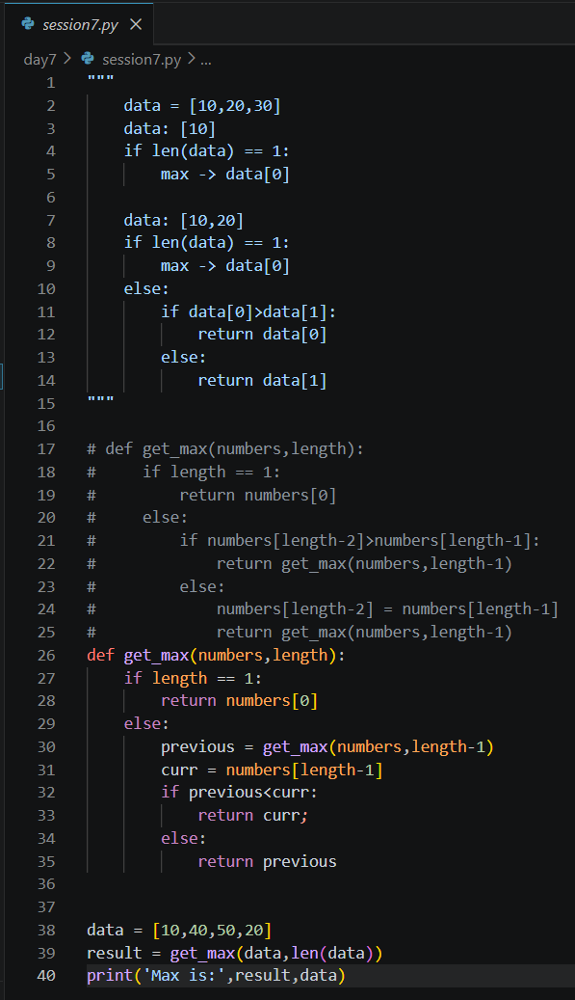
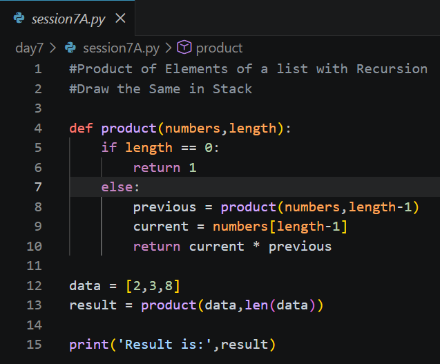

Day 7 - Recursion, Searching, Sorting & Filtering
Date: 3 July 2026
Duration: 2:00 Hrs
Training Company: Auribises Technologies
Trainer: Ishant Kumar
Day 7 focused on understanding recursion in depth and applying fundamental searching, sorting, and filtering algorithms in Python. The trainer explained how recursive function calls are managed by Stack Memory while Python objects continue to reside in Heap Memory, providing a clear understanding of recursive program execution.
Topics Covered
- Recursion Fundamentals
- Stack & Heap Memory Representation
- Recursive Function Calls
- Base Case and Recursive Case
- Finding Maximum Element using Recursion
- Product of List Elements using Recursion
- Linear Search Algorithm
- Bubble Sort Algorithm
- Filtering Techniques
- Search, Sort & Filter on List of Dictionaries
Recursion Fundamentals
The session began with an in-depth explanation of recursion. We learned that recursion is a programming technique in which a function repeatedly calls itself until a terminating condition, known as the base case, is reached.
Instead of solving an entire problem at once, recursion divides it into smaller instances of the same problem. Each recursive call is stored inside the program's call stack until execution reaches the base case, after which the calls return one by one.

Finding Maximum Element using Recursion
We implemented a recursive function that finds the maximum element in a list without using loops to compare all elements directly. Each recursive call compared the current element with the maximum value returned by the previous recursive call until only one element remained.

Product of List Elements using Recursion
We implemented another recursive program to calculate the product of all elements present inside a list. Instead of using a loop, each recursive call multiplied the current element with the result returned by the previous recursive call, eventually producing the final product.

Linear Search
After recursion, we implemented the Linear Search algorithm. The algorithm traverses every element of a list sequentially until the required element is found or the entire list has been searched.
We also practiced writing reusable search functions using parameters and keyword arguments instead of hardcoding values.
- Sequential searching
- Reusable search functions
- Searching using function parameters
- Time Complexity: O(n)

Bubble Sort
The trainer explained Bubble Sort by repeatedly comparing adjacent elements and swapping them whenever they were in the wrong order. Using nested loops, the largest element gradually "bubbled" toward the end of the list after each pass.
Although Bubble Sort is not the most efficient sorting algorithm, implementing it helped understand the logic behind comparison-based sorting techniques.
- Nested loops
- Adjacent element comparison
- Element swapping
- Ascending order sorting

Filtering Data
We also explored filtering techniques by selecting only those elements that satisfy a particular condition. This concept is widely used while processing datasets, retrieving records and implementing search systems.

Flight Search, Sort & Filter System
Towards the end of the session, we moved from simple lists to a real-world data structure consisting of a list of dictionaries. Each dictionary represented an individual flight and stored attributes such as flight code, airline, source, destination, fare and duration.
We implemented reusable functions that could search flights using flight codes and dynamically sort the dataset based on different fields like fare or duration. This demonstrated how the same algorithm can work with complex real-world data structures.


Assignment
The assignment was to complete the filtering functionality of the Flight Management System. The objective was to design a reusable function capable of filtering flights using different criteria supplied by the user.
The completed solution supports filtering flights based on:
- Carrier
- Fare (Greater Than / Less Than)
- Duration (Greater Than / Less Than)
- Source
- Destination
To improve the implementation, the program also validates user input, uses a reusable display function, performs case-insensitive matching for text fields, and handles numeric filtering separately for fare and duration.

Key Learning Outcomes
- Understanding how recursion works internally using stack frames.
- Importance of defining proper base cases in recursive functions.
- Using recursion to solve mathematical and list-processing problems.
- Implementing reusable search algorithms using functions.
- Understanding Bubble Sort through nested loop implementation.
- Filtering datasets using conditional logic.
- Working with real-world datasets represented as a list of dictionaries.
- Designing reusable Search, Sort and Filter functions for structured data.
Session Summary
Day 7 was one of the most algorithm-oriented sessions of the training. We moved beyond basic Python syntax and focused on understanding how recursive algorithms execute in memory and how common operations such as searching, sorting and filtering can be implemented from scratch.
The practical exercises demonstrated how the same programming techniques can be applied to increasingly complex data structures, preparing us for solving larger real-world programming problems.
Personal Reflection
Today's session was one of the most algorithm-focused sessions of the training. Understanding recursion through stack and heap memory diagrams made it much easier to visualize how recursive calls are executed. Implementing searching, sorting and filtering algorithms on a flight dataset also showed how these concepts are used together while working with structured real-world data.
Next Session
The trainer informed us that the next session will continue with recursion, memory representation and more advanced function-related concepts before moving towards object-oriented programming.